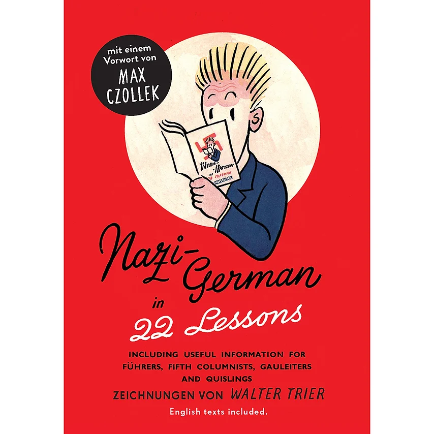
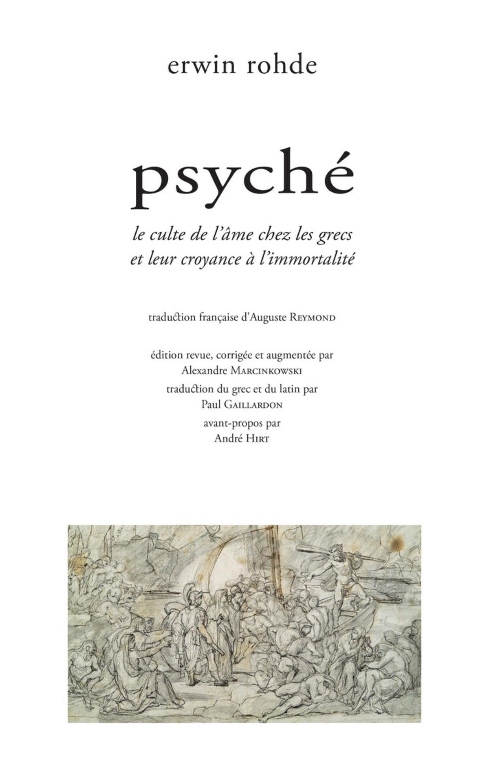
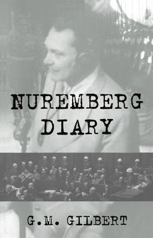
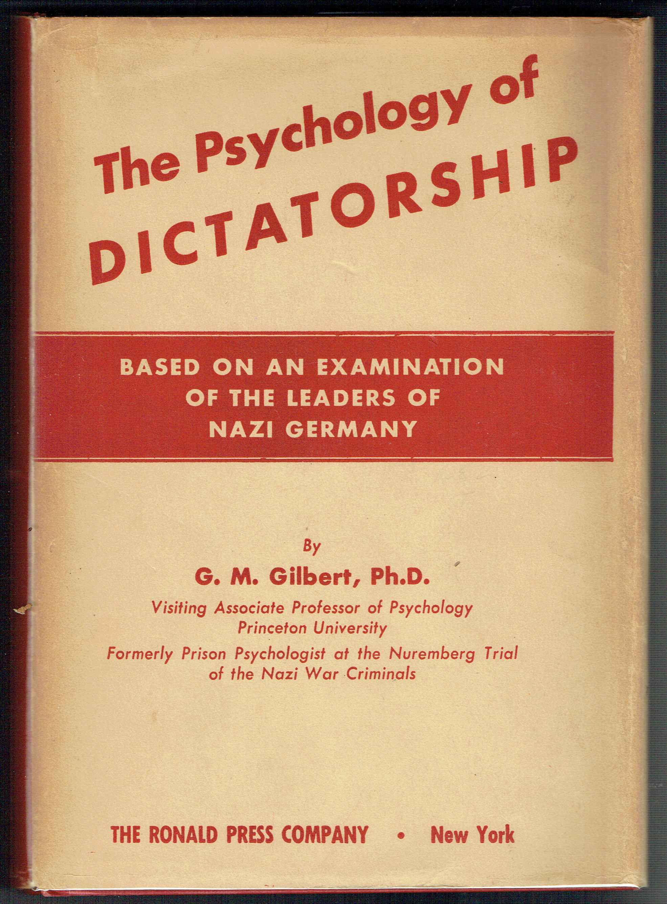
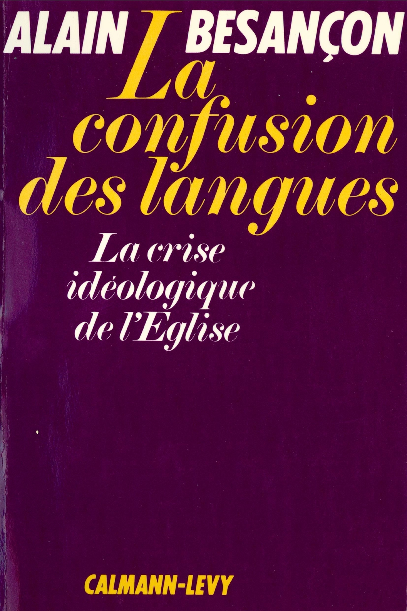

1:15:41 · 15 OPERE
Tre libri che ci parlano dal passato.
Il filo del discorso
Tre letture distanti per genere e data vengono accostate attraverso una domanda comune: come riconoscere una lingua pubblica che, conservando parole familiari, ne rovescia il significato? Dr Divago comincia da Nazi-German in 22 Lessons, opuscolo satirico illustrato da Walter Trier durante la seconda guerra mondiale, e dalla riedizione con prefazione di Max Czollek. La caricatura, nel suo ragionamento, smaschera la distanza fra le formule del potere e le azioni che esse rivestono: l’aggressione chiamata protezione, il dissenso trasformato in crimine, la subordinazione presentata come collaborazione. Prima di leggere alcune tavole, il discorso si allarga però alla responsabilità degli intellettuali, al rapporto fra estetica ed etica e alla perdita di criteri che permettano di giudicare una società dall’interno. La lunga digressione iniziale è parte dell’argomento. Il relatore contrappone l’accumulo di informazioni alla capacità di pensare, il consumo culturale a una trasformazione della propria vita. Giudica severamente Thomas Mann e richiama, senza discuterne qui opere determinate, altri scrittori e pensatori dell’Europa centrale. L’autobiografia Un piccolo sì e un grande no, evocata in un passaggio confuso della trascrizione automatica accanto a Tucholsky, è invece di George Grosz. L’allusione a Polanyi e il richiamo agli studi di Rohde sull’anima restano collegamenti probabili, non titoli integralmente pronunciati. Attraverso Erasmo, Socrate e i racconti biblici, Dr Divago sviluppa la contrapposizione fra un’apparenza rispettabile e una vita interiore impoverita: i Sileni rovesciati, Narciso, il vitello d’oro e il prologo di Giovanni diventano immagini della separazione fra valore e possesso. La critica alla riduzione materialistica della religione è una posizione filosofica e teologica del relatore, non una prescrizione sanitaria o un invito a rinunciare alla cura di sé. Tornando a Trier, Dr Divago insiste sull’efficacia del grottesco e sulla serietà morale che può sostenere una forma comica. L’intermezzo sulle parole ragionare, ragunare e ragù contiene però un’associazione etimologica non accolta dai lessici: ragù deriva dal francese ragoût. Le tavole sul presunto tipo ariano, sulle nazioni definite decadenti e sull’atmosfera di cordialità ottenuta con una minaccia mostrano, nella sua lettura, la falsificazione del linguaggio operata dalla propaganda nazista. Il relatore estende polemicamente questi esempi alla comunicazione politica e alle restrizioni sanitarie degli anni della pandemia. La scheda mantiene distinta questa analogia dal documento storico: la somiglianza di una formula o di una procedura comunicativa non dimostra identità fra regimi, intenzioni o crimini. Anche la ricostruzione della continuità degli apparati nel dopoguerra richiede distinzioni: processi, epurazioni e provvedimenti di amnistia sono esistiti, con esiti e limiti differenti. Il secondo libro è il Diario di Norimberga di Gustave Mark Gilbert, affiancato da una breve menzione della sua Psicologia della dittatura. Dr Divago legge il confronto nel quale Göring sostiene che i governanti possono mobilitare popolazioni riluttanti alla guerra presentandole come minacciate e screditando i pacifisti. Gilbert replica richiamando la rappresentanza politica e il potere del Congresso statunitense di dichiarare guerra. È un colloquio privato riportato nel diario, non una confessione verbalizzata durante un interrogatorio in aula. Il relatore confronta poi edizioni americana e britannica e interpreta una presunta omissione come censura: il dato editoriale del volume britannico è riscontrato, mentre l’assenza del passo e la motivazione intenzionale richiedono una collazione non ancora effettuata. David Maxwell Fyfe, autore della prefazione britannica, apparteneva all’accusa, non al collegio giudicante. La terza lettura, La confusione delle lingue di Alain Besançon, sposta l’attenzione dalla propaganda esterna all’adozione inconsapevole delle sue categorie. Nel brano sul rapporto fra Chiesa e nazismo, il problema è riconoscere quando persino una richiesta di moderazione accetta già la classificazione discriminatoria dell’avversario. Dr Divago segue la riflessione di Besançon sul facile sdegno retrospettivo e sulla difficoltà di agire meglio in circostanze concrete; distingue poi la critica delle categorie naziste dall’esempio successivo riguardante capitalismo e socialismo. Il confronto conclusivo fra vaccinati e non vaccinati è un’applicazione del relatore, non un passo scritto da Besançon nel 1978. I tre libri convergono così, per Dr Divago, nell’esigenza di interrogare le parole con cui si ordina l’esperienza prima che esse rendano invisibile la responsabilità personale.
I libri nel discorso

Nazi-German in 22 Lessons / Nazi-Deutsch in 22 Lektionen
Copertina: Favoritenpresse 2022, ISBN 9783968490533
Copertina autentica della riedizione bilingue 2022, con prefazione di Max Czollek: fondo rosso e illustrazione di un lettore con l’opuscolo. Il file editoriale include margini bianchi; non è la copertina dell’originale 1942.
Riferimento ricavato dalla trascrizione automatica.
Passaggio 0:31 ↗ · Fonti e libro ↗
Un piccolo sì e un grande no
Identificazione probabile
Frontespizio dell’autobiografia, edizione inglese 1946: Frontespizio di A Little Yes and a Big No, Dial Press, New York, 1946; traduzione di Lola Sachs Dorin.
Frontespizio autentico dell’edizione Dial Press 1946, digitalizzata dall’University of California. Non è una copertina esterna né l’edizione italiana Longanesi. La prima traduzione italiana, di Luca Pavolini, è del 1948.
Riferimento ricavato dalla trascrizione automatica.
Passaggio 3:34 ↗ · Fonti e libro ↗
La grande trasformazione (The Great Transformation)
Identificazione probabile
Copertina di una edizione inglese: Copertina inglese Beacon Press 2001, ISBN 9780807056431, prefazione Joseph E. Stiglitz e introduzione Fred Block. Originale 1944. Non copertina della traduzione Einaudi di Roberto Vigevani, prima uscita italiana 1974.
Beacon Press 2001. La immagine non è attribuita alla edizione italiana evocata nel filmato.
Riferimento ricavato dalla trascrizione automatica.
Passaggio 7:45 ↗ · Fonti e libro ↗
Psyche. Seelencult und Unsterblichkeitsglaube der Griechen
Identificazione probabile
Copertina: Encre Marine / Les Belles Lettres · traduzione francese 2017
Copertina autentica della versione francese Psyché. Le culte de l’âme chez les grecs et leur croyance à l’immortalité, distribuita dall’editore Les Belles Lettres, 21 marzo 2017. L’opera è di fine Ottocento; questa traduzione non viene attribuita al video.
Riferimento ricavato dalla trascrizione automatica.
Passaggio 14:57 ↗ · Fonti e libro ↗
Adagia (Adagi)
Identificazione probabile
Copertina: Bompiani · 2013
Immagine autentica dell’opera, controllata visivamente; l’edizione di riferimento non è attribuita al filmato.
Riferimento ricavato dalla trascrizione automatica.
Passaggio 17:56 ↗ · Fonti e libro ↗
Simposio
Identificazione probabile
Copertina: Adelphi · Piccola Biblioteca 81 · 1979
Copertina autentica dell’edizione di riferimento, controllata visivamente. Non identifica l’esemplare letto o citato nel video.
Riferimento ricavato dalla trascrizione automatica.
Passaggio 18:44 ↗ · Fonti e libro ↗
Esodo
Identificazione probabile
Volume di riferimento: San Paolo, 2014 · Nuova Versione dai Testi Antichi · edizione di riferimento
Copertina della Bibbia completa, che contiene l’Esodo. Non è la copertina di un’edizione autonoma del libro biblico; la traduzione non è attribuita al contributo.
Riferimento ricavato dalla trascrizione automatica.
Passaggio 21:17 ↗ · Fonti e libro ↗Isaia
Identificazione probabile
Copertina del volume completo: San Paolo, 2014 · Nuova Versione dai Testi Antichi · edizione di riferimento
Isaia è un libro della Bibbia. L’immagine mostra il volume completo di riferimento San Paolo, non un’edizione autonoma di Isaia né una versione identificata nella citazione.
Riferimento ricavato dalla trascrizione automatica.
Passaggio 21:37 ↗ · Fonti e libro ↗Vangelo secondo Giovanni
Identificazione probabile
Copertina del volume completo: San Paolo, 2014 · Nuova Versione dai Testi Antichi · edizione di riferimento
Vangelo secondo Giovanni è un libro della Bibbia. L’immagine mostra il volume completo San Paolo di riferimento, non un’edizione autonoma del singolo libro e non una versione identificata nella citazione.
Riferimento ricavato dalla trascrizione automatica.
Passaggio 22:43 ↗ · Fonti e libro ↗
Fedro
Identificazione probabile
Copertina: BUR · 2006 · a cura di Roberto Velardi
Immagine autentica dell’opera, controllata visivamente; l’edizione di riferimento non è attribuita al filmato.
Riferimento ricavato dalla trascrizione automatica.
Passaggio 26:35 ↗ · Fonti e libro ↗
Costituzione della Repubblica Italiana
Copertina dell’edizione Intra aggiornata al 2023: Intra · 2023 · introduzione di Umberto Vincenti
Copertina autentica del testo integrale, aggiornata alla legge costituzionale 26 settembre 2023 n.1. È successiva al filmato del 2019 e non rappresenta la versione storica letta dal relatore. Umberto Vincenti firma l’introduzione.
Riferimento ricavato dalla trascrizione automatica.
Passaggio 57:49 ↗ · Fonti e libro ↗
Diario di Norimberga (Nuremberg Diary)
Copertina: Edizione 1995, ISBN 9780306806612
Copertina autentica dell’edizione 1995, con fotografia di Gilbert e veduta dell’aula. Non rappresenta le edizioni USA 1947 o britannica 1948 confrontate nel parlato e non dimostra l’assenza di passaggi in queste.
Riferimento ricavato dalla trascrizione automatica.
Passaggio 1:01:23 ↗ · Fonti e libro ↗
The Psychology of Dictatorship: Based on an Examination of the Leaders of Nazi Germany
Copertina: Ronald Press, edizione originale 1950; tiratura non accertata
Fotografia autentica della sovraccopertina rossa e crema, con dorso e bordo del volume, titolo completo, autore e Ronald Press New York leggibili. Non è un frontespizio. Il catalogo CiNii verifica indipendentemente l’opera e il 1950; nessuna tiratura specifica è desunta dalla sola fotografia.
Riferimento ricavato dalla trascrizione automatica.
Passaggio 1:01:58 ↗ · Fonti e libro ↗
Costituzione degli Stati Uniti d’America
Identificazione probabile
Copertina della raccolta: Testo firmato il17settembre1787. Per l’immagine si usa la raccolta Penguin Classics The Federalist Papers, ISBN 9780140444957, che dichiara di includere il testo della Costituzione; non è una fotografia della pergamena originaria.
Copertina autentica di The Federalist Papers: la descrizione editoriale attesta che la raccolta comprende il testo completo della Costituzione. Non è il frontespizio costituzionale del 1787 e Hamilton, Madison e Jay non sono presentati come unici autori del documento.
Riferimento ricavato dalla trascrizione automatica.
Passaggio 1:06:53 ↗ · Fonti e libro ↗
La confusione delle lingue. La crisi ideologica della Chiesa
Copertina: Calmann-Lévy, edizione digitale EAN 9782702150535
Copertina viola e gialla dall’estratto digitale pubblico dell’editore; i dati editoriali indicano titolo, autore, editore, EAN e copyright 1978. Non è la copertina dell’edizione italiana Editoriale Nuova 1981, né una copertina ricostruita.
Riferimento ricavato dalla trascrizione automatica.
Passaggio 1:10:01 ↗ · Fonti e libro ↗